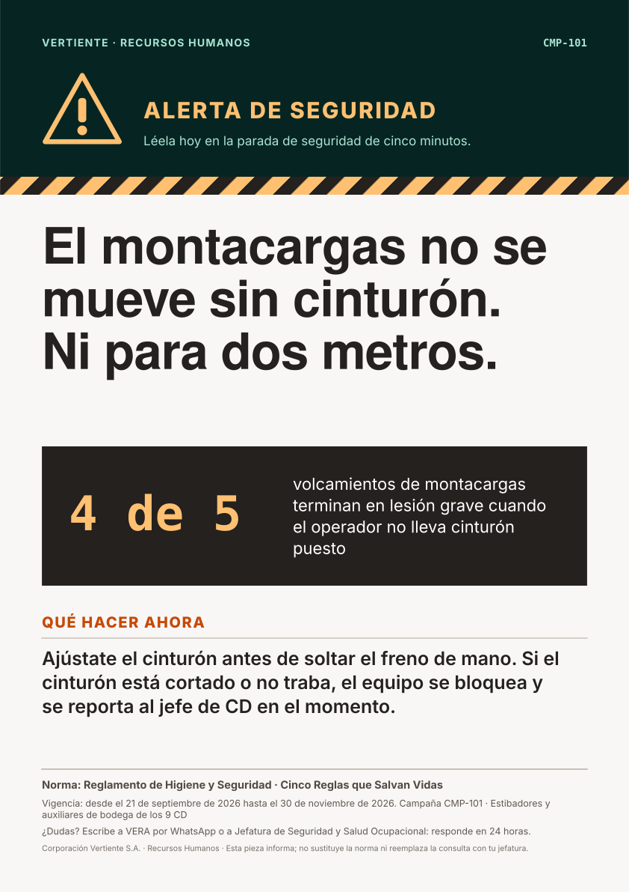
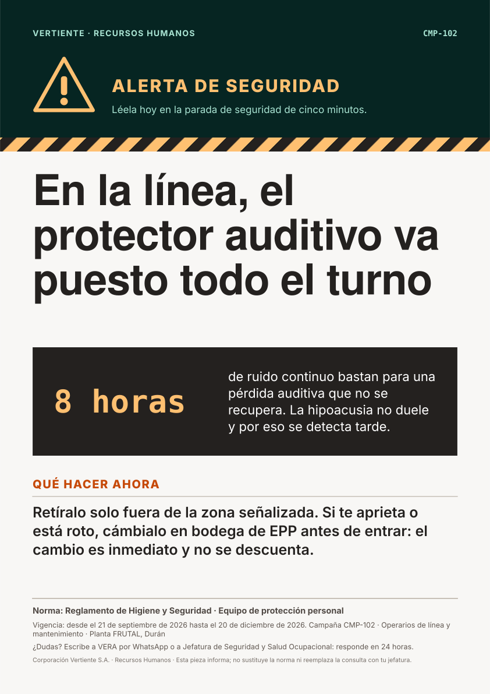
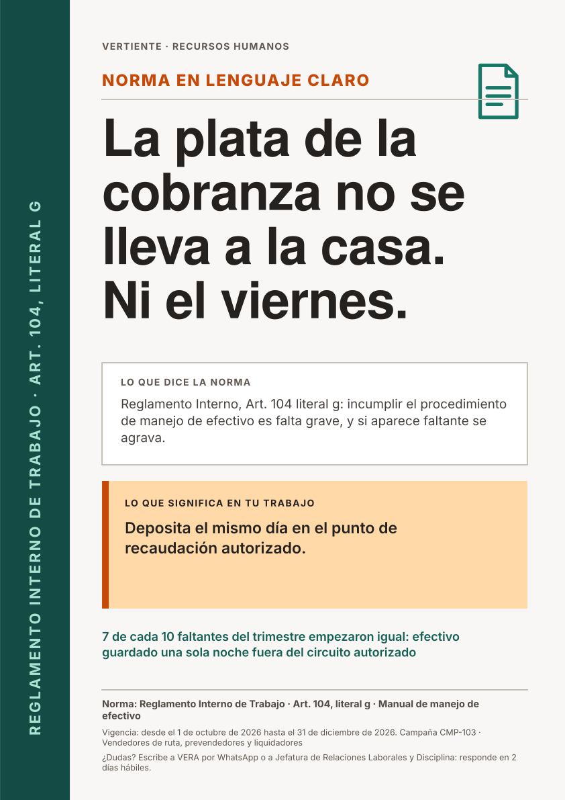
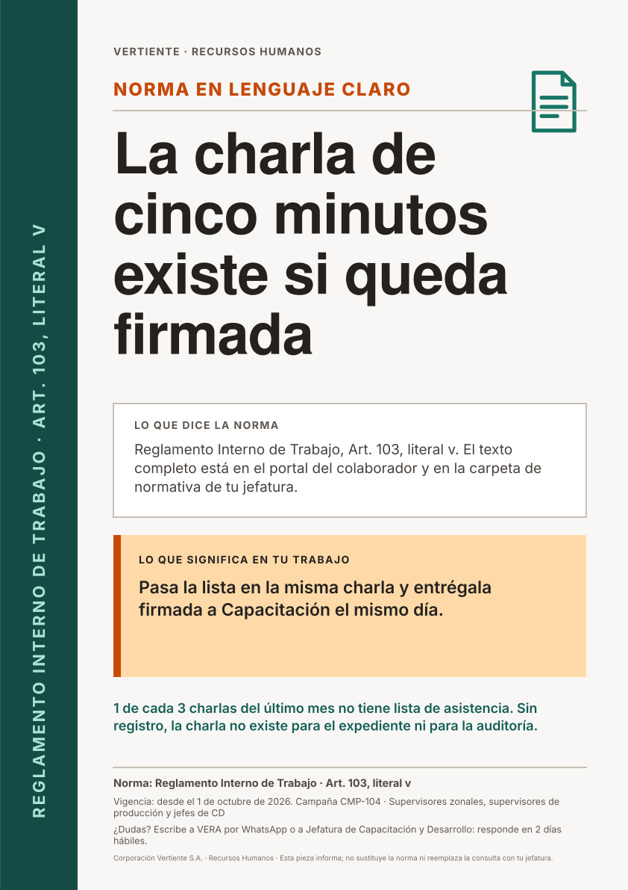
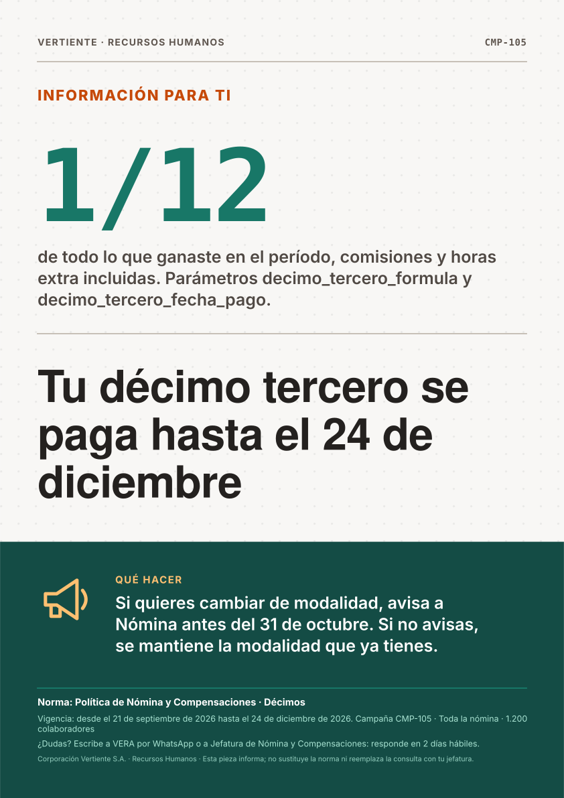

Afiches de campaña · Corporación Vertiente S.A.
Piezas generadas por scripts/generar-piezas-demo.mjs a partir de demostración local (el motor aún no expone campañas redactadas).
Cada archivo es un SVG A3 vertical autocontenido, listo para imprimir en la cartelera del centro de distribución.

CMP-101 · plantilla alerta-seguridad
Christian Fabián Villalba León · Estibador de Bodega · Matriz Guayaquil
CMP-102 · plantilla alerta-seguridad
Fernando Paredes López · Operario de Tratamiento de Agua · Planta FRUTAL Durán
CMP-103 · plantilla claridad-normativa
Marco Caicedo Valencia · Prevendedor de Mayoristas y Distribuidores · Matriz Guayaquil
CMP-104 · plantilla claridad-normativa
Belén Bailón Torres · Supervisor Zonal de Ventas · Centro de Distribución Ambato
CMP-105 · plantilla dato-protagonista
Blanca Guadalupe Núñez Naranjo · Ayudante de Venta (Perchador) · Centro de Distribución Machala- CMP-106 · plantilla convivencia
Wilmer Ponce Cedeño · Prevendedor de Canal Tradicional · Centro de Distribución Cuenca